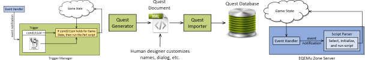
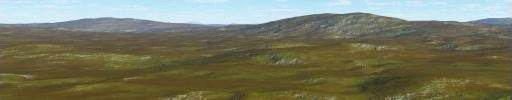
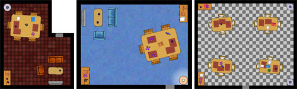

Procedural Content Generation
Procedural content generation is the automatic creation of video game content, where
content means anything that is traditionally created by an artist or a designer,
such
as maps, textures, levels, and objects.
Content creation usually requires equal parts creativity and scutwork.
The aim of procedural content generation is to
relieve the designer of the scutwork in ways that create more
opportunities for creativity.
Procedural Texture Generation (2018)
Ian Parberry,
"The Unexpected Beauty of Modular Bivariate Quadratic Functions",
Journal of Mathematics and the Arts, Vol. 12, No. 4, pp. 197-206,
2018.
[more information]
Abstract
Modular bivariate quadratic functions
are used to procedurally generate textures that resemble
ornamentation, skin, scales, feathers, and textiles.
They are easy to implement and particularly suited to parallel execution as a pixel shader.
A prototype browser-based procedural texture generator
with an interface suitable for use by non-mathematicians
such as designers and artists is described.

Jonathon Doran and Ian Parberry,
"A Server-Side Framework for the Execution
of Procedurally Generated Quests in an MMORPG",
Proceedings of the 16th Annual European Conference
on Simulation and AI in Computer Games (GAMEON 2015), pp. 103-110, Amsterdam,
The Netherlands, Eurosis, December 2015.
[pdf,
BibTeX]
Abstract
We describe a framework for executing procedurally
generated quests implemented in the MMORPG Everquest using the Open
Source EQEmu Everquest server. Quests play out at run-time
using a collection of triggers, which consist of a testable game
state condition and a script that is to be run when the condition is
satisfied. We describe the interface between the quest generator and
the server which enables the seamless integration of the procedurally generated quests
within the existing server architecture. To demonstrate
how this process takes place in real time,
we analyze a nontrivial procedurally generated quest and
describe the key server-controlled actions that derive from it.
Author's Comments
A preliminary version of this paper appeared as
Technical Report LARC-2015-01,
Laboratory for Recreational Computing, Dept. of Computer Science & Engineering,
University of North Texas, February 2015.
[pdf,
BibTeX]
For more details on the quest generator used in this paper, see
Jonathon Doran and
Ian Parberry,
"
A Prototype Quest Generator Based on a
Structural Analysis of Quests from Four MMORPGs
",
Proceedings of the Second International Workshop on Procedural Content
Generation in Games, pp. 1-8, 2011.
Modeling Real-World Terrain (2015)

Ian Parberry,
"Modeling Real-World Terrain with Exponentially Distributed Noise",
Journal of Computer Graphics Techniques,
Vol. 4, No. 2, pp. 1-9, 2015.
[Manuscript and BibTex at JCGT,
more information]
Abstract
A statistical analysis of elevation data from a 160,000 square kilometer region
finds that terrain gradients
appear to be exponentially distributed at all horizontal resolutions.
Simple modifications to the Perlin noise algorithm and
the amortized noise algorithm change the gradient
distribution in each octave to an exponential distribution,
resulting in varied and interesting procedurally generated terrain.
Amortized Noise (2014)

Ian Parberry,
"Amortized Noise",
Journal of Computer Graphics Techniques,
Vol. 3, No. 2, pp. 31-47, 2014.
[Manuscript and BibTex at JCGT,
more information]
Abstract
Perlin noise is often used to compute a regularly spaced grid of noise values. The amortized
noise algorithm takes advantage of this regular call pattern to amortize the computation cost of
floating-point computations over interpolated points using dynamic programming techniques.
The 2D amortized noise algorithm uses a factor of 17/3 ≈ 5.67 fewer floating-point multiplications
than the 2D Perlin noise algorithm, resulting in a speedup by a factor of approximately
3.6-4.8 in practice on available desktop and laptop computing hardware. The 3D amortized
noise algorithm uses a factor of 40/7 ≈ 5.71 fewer floating-point multiplications than the 3D
Perlin noise algorithm; however, the increasing overhead for the initialization of tables limits
the speedup factor achieved in practice to around 2.25. Improvements to both 2D Perlin
noise and 2D amortized noise include making them infinite and non-repeating by replacing the
permutation table with a perfect hash function, and making them smoother by using quintic
splines instead of cubic splines. While these improvements slow down 2D Perlin noise down
by a factor of approximately 32-92, they slow 2D amortized noise by
a negligible amount.
Author's Comments
What has this to do with procedural content generation you may ask?
Well, Perlin noise is usually the go-to algorithm for generating
smooth random noise for procedural content such as textures.
Designer Worlds (2014)

Ian Parberry,
"Designer Worlds: Procedural Generation of
Infinite Terrain from Real-World Elevation Data",
Journal of Computer Graphics Techniques,
Vol. 3, No. 1, pp. 74-85, 2014.
[pdf,
BibTeX,
more information]
Abstract
The standard way to procedurally generate random terrain for
video games and other applications is to post-process the output of a fast noise
generator such as Perlin Noise.
Tuning the post-processing to achieve particular types of terrain requires
game designers to be reasonably well-trained in
mathematics.
We describe how a well-known variant of Perlin Noise called Value Noise
can be used by a designer trained in geography to generate
geotypical terrain based on elevation statistics drawn from widely available
sources such as the United States Geographical Service.
Burning Objects that Melt (2013)
Dhanyu Amarasinghe
and
Ian Parberry,
"Real-time Rendering of Melting Objects in Video Games",
Proceedings of the 18th International Conference on Computer Games,
pp. 154-158, Louisville, KY, 2013.
[pdf,
more information,
BibTex]
Abstract
We present a method for simulating the melting and flowing of material
in burning objects fast enough to be of use in video games where most
of the graphical and computational resources are needed elsewhere.
The standard practice of using particle engines or fluid dynamics
for melting are far too costly for use in this environment.
We demonstrate that our method, which is based on systematic
polygonal expanding and folding, uses only a fraction of the
computational power available by implementing the computation
on a very modest GPU using CUDA.
Author's Comment
A preliminary version of this paper appeared in
Technical Report LARC-2013-01, Laboratory for Recreational Computing, Dept. of Computer Science & Engineering, Univ. of North Texas, 2013.
[pdf]
Burning Solid Objects (2013)

Dhanyu Amarasinghe and
Ian Parberry,
"Real-time Rendering of Burning Solid Objects in Video Games",
Proceedings of the 18th International Conference on Computer Games,
pp. 139-143, Louisville, KY, 2013.
[pdf,
more information,
BibTex]
Abstract
Objects in 3D games are typically shell models, a polygon mesh
representing the shell or skin of the object. While emulation
of the behaviour of shell models under combustion is sufficient
for many game applications and is fairly well studied, solid objects
do in fact burn rather differently than shell objects. We show how
to manipulate shell models so that they appear to burn as solid models.
Since our burning objects will be only a small part of a video game,
computation speed is of the essence. We demonstrate that our method uses
only a fraction of the computational power available by implementing
the computation on a modest GPU using CUDA.
Author's Comment
A preliminary version of this paper appeared in
Technical Report LARC-2012-01, Laboratory for Recreational Computing, Dept. of Computer Science & Engineering, Univ. of North Texas, 2012.
[pdf]
RPG Economics (2012)
Jonathon Doran and
Ian Parberry,
"Emergent Economies for Role Playing Games",
International Journal of Intelligent Games and Simulation,
Vol. 7. No. 1, pp. 35-47, 2012.
[pdf]
Abstract
Computer role playing games, particularly those with persistent worlds, often allow players
to buy and sell goods and services with computer controlled non-player characters (NPCs).
The prices for these goods and services are often determined a priori, and remain fixed for the
game's duration. As a result, prices do not respond to changes in supply and demand, nor does
supply and demand respond to changes in prices. We present an economic model suitable for
use with role playing games that will automatically determine prices for multiple goods, supply
and demand for each character, and an allocation of agents to roles that is sustainable given the
state of the game.
Author's Comments
Lars Doucet has created
BazaarBot,
an Open Source
Economics Engine based on the algorithm described in this paper.
Read his Gamasutra blog post
for more information.
Sokoban Level Generation (2011)

Joshua Taylor and
Ian Parberry,
"Procedural Generation of Sokoban Levels",
Proceedings of the 6th International North American Conference
on Intelligent Games and Simulation (GAMEON-NA),
pp. 5-12, EUROSIS, 2011.
[pdf,
BibTeX,
more information]
Abstract
We describe an algorithm for the procedural generation of
levels for the popular Japanese puzzle game Sokoban.
The algorithm takes a few parameters
and builds a random instance of the puzzle that is guaranteed to be solvable.
Although our algorithm and its implementation runs in exponential time,
we present experimental evidence that it is sufficiently fast for
offline use on a current generation PC when used to generate levels
of size and complexity similar to those human-designed levels currently
available online.
Author's Comments
For a human study comparing procedurally generated Sokoban levels
to levels hand-crafted by a human designer, see
Joshua Taylor, Thomas D. Parsons, and Ian Parberry,
"Comparing
Player Attention on Procedurally Generated vs. Hand
Crafted Sokoban Levels with an Auditory Stroop Test", 2015.

Jonathon Doran and
Ian Parberry,
"A Prototype Quest Generator Based on a
Structural Analysis of Quests from Four MMORPGs",
Proceedings of the Second International Workshop on Procedural Content
Generation in Games, pp. 1-8, Bordeaux, France, 2011.
[pdf,
BibTeX,
more information]
Abstract
An analysis of 3000 quests from four popular RPGs
(Eve Online, World of Warcraft, Everquest, and Vanguard: Saga of Heroes)
reveals that RPG quests appear to share a common structure. We propose
a classification of RPG quests based on this structure, and describe a
prototype quest generator based on that classification. Our aim is to
procedurally generate quests that are complex, multi-leveled, and
plausible to players of RPGs. We analyze a nontrivial quest from
Everquest and one from our prototype quest generator for comparison.
Author's Comments
For more details on how this quest generator can be implemented in an MMORPG server,
see Jonathon Doran and
Ian Parberry,
"
A Server-Side Framework for the
Execution of Procedurally Generated Quests in an MMORPG
", 2015.
Clutter (2011)

Joshua Taylor and
Ian Parberry,
"Randomness + Structure = Clutter: A Procedural Object Placement
Generator Using Petri Nets",
Proceedings of the 10th International
Conference on Entertainment Computing, pp. 424-427, Vancouver, Canada, October 2011.
[more information,
pdf,
BibTeX]
Abstract
Clutter is the random yet structured placement of objects in a room.
We describe a procedural clutter generator that achieves believable, varied, and
controllable object placement using a hierarchical colored Petri net capable of
expressing any computable set of object placement constraints.
Sea Foam (2011)

Mary Yingst, Jennifer R. Alford, and
Ian Parberry,
"Very Fast Real-Time Ocean Wave Foam Rendering Using Halftoning",
Proceedings of the 6th International North American Conference on Intelligent Games and Simulation (GAMEON-NA),
pp. 27-34, EUROSIS, Troy, NY, 2011.
[pdf,
more information,
BibTeX]
Abstract
We introduce an efficient method for emulating sea foam dissipation suitable for use in
real-time interactive environments such as video games.
By using a precomputed dither array with controlled spectral characteristics adopted from halftone research as a
control mechanism in the pixel shader, we can animate the appearance of foam bubbles popping
in a random manner while allowing it to clump naturally.
Burning Low-Polygon Objects (2011)

Dhanyu Amarasinghe
and
Ian Parberry,
"Fast, Believable Real-time Rendering of Burning Low-Polygon Objects in
Video Games",
Proceedings of the 6th International North American Conference on Intelligent Games and Simulation (GAMEON-NA),
pp. 21-26, EUROSIS, Troy, NY, 2011.
(Recipient of Best Paper Award)
[pdf,
more information,
BibTeX]
Abstract
Deformation of the low-polygon models used in in video games is challenging since it is hard to maintain realism.
We show how real-time mesh refinement can be used for modeling the deformation and consumption of
low-polygon models under combustion while generating procedural fire. Our focus is on trading realism
for computation speed so that processing power is still available for other
computational tasks. Our method also allows for quick and easy LOD (level-of-detail) rendering
of burning objects. We have implemented and tested our method on a relatively modest GPU using CUDA.
Our experiments suggest that our method gives a believable rendering of the effects of fire while
using only a small fraction of CPU and GPU resources.
Burning Objects (2011)
Dhanyu Amarasinghe
and
Ian Parberry,
"Towards Fast, Believable Real-time Rendering of Burning Objects in Video Games",
Proceedings of the 6th International Conference on the Foundations of Digital Games, pp. 256-258, Bordeaux, France,
July 2011.
[pdf,
more information,
BibTeX]
Abstract
We present a framework for emulating the deformation and consumption of polygonal models under combustion while
generating procedural fire. Our focus is on achieving the best visual effects possible while maximizing
computation speed so that the processing power is available for other tasks in video games. We have implemented
and tested our method on a relatively modest GPU using CUDA. Our experiments suggest that our method
gives a believable rendering of the effects of fire while using only a small fraction of CPU and GPU resources.
Terrain (2010)

Jonathon Doran and
Ian Parberry,
"Controlled Procedural Terrain Generation Using Software Agents",
IEEE Transactions on
Computational Intelligence and AI in Games
, Vol. 2, No. 2, pp. 111-119, June 2010.
[pdf,
BibTeX,
more information]
Abstract
Procedural terrain generation is used to create landforms for applications such as computer
games and flight simulators. While most of the existing work has concentrated on algorithms that
generate terrain without input from the user, we explore a more controllable system that uses
intelligent agents to generate terrain elevation heightmaps according to designer-defined constraints.
This allows the designer to create procedural terrain that has specific properties.
Wind and Snow (2006)
Criss Martin and
Ian Parberry,
"Real Time Dynamic Wind Calculation for a Pressure
Driven Wind System",
Proceedings of the 2006 ACM SIGGRAPH Video Game Symposium,
pp. 151-154,
Boston, MA, July 2006. (Acceptance rate 20/102, 20%)
[pdf,
more information,
BibTeX]
Abstract
We describe real time dynamic wind calculation for a pressure
driven wind system. This simple and elegant approach allows us
to perform visual effects in real time using a minute fraction of the
CPU's processing power over and above what is required for static
wind. Experiments were performed with a real-time application to
render wind-driven snow over a 3D terrain to verify these claims.
Author's Comments
Criss did an excellent job here while still an undergraduate.
Clouds and Stars (2005)
Timothy Roden and
Ian Parberry,
Efficient Real-Time Procedural Sky Rendering Using 3D Hardware",
Proceedings of the 2005 ACM SIGCHI International Conference
on Advances in Computer Entertainment Technology, Valencia, Spain, pp. 434-437,
June 15-17, 2005. [pdf,
BibTeX]
Abstract
Real-time virtual reality applications, including games, increasingly use outdoor environments.
A common task in an earth-type environment is to render a sky that is
realistic both in terms of imagery and physics. Programmable graphics hardware offers the
opportunity to procedurally generate and render a highly realistic sky at a minimal cost.
We propose an integrated set of efficient algorithms that run in graphics hardware for interactive
sky rendering that is fully parameterized for real-time control. Features of our method include
multi-layered dynamic clouds and stars that individually flicker at
varying intensity and rate.
Level Generation (2005)
Timothy Roden and
Ian Parberry,
"Procedural Level Generation",
Game Programming Gems 5, pp. 579-588, Charles River Media, 2005.
[BibTeX]
Abstract
Traditionally, a typical 3D game development project proceeds concurrently on two fronts.
Programmers design, code and test a game engine at the same time that artists create content for the game.
There are compelling reasons to suggest that this paradigm may no longer
be desirable or even feasible for some projects. Technical advances in hardware have enabled
the use of art assets that are much more detailed than ever before. Increased storage and available
RAM translates into larger game worlds. Some games require an enormous amount of
content such as online multiplayer games and games that aim to provide a high level of replay.
Still another factor is the increased availability of licensed engines and other high
quality middleware which can cut engine development time significantly. What this means is high definition
art assets, which take artists longer to create, will likely be needed sooner rather
than later in the development cycle. One obvious solution to this problem
is to create art assets procedurally. This gem presents the ideas and techniques behind a procedural level
generator. We illustrate its use to create a simple 3D dungeon.
Methodology (2004)
Timothy Roden and
Ian Parberry,
"From Artistry to Automation: A Structured Methodology
for Procedural Content Creation",
Proceedings of the 3rd International Conference on Entertainment Computing, pp. 151-156,
Eindhoven, The Netherlands,
September 1-3, 2004. [pdf,
BiBTeX]
Abstract
Procedural techniques will soon automate many aspects of content creation for computer games.
We describe an efficient, deterministic, methodology for procedurally generating 3D game content
of arbitrary size and complexity. The technique progressively amplifies simple
dynamically generated data structures into complex geometry. We use a procedural pipeline with
a minimum set of controls at each stage to facilitate authoring. We show two examples from our research.
Our terrain generator can synthesize massive 3D terrains in real-time while our level generator can
be used to create indoor environments offline or in real-time.
Created April 20, 2010.
Last updated May 31, 2010.